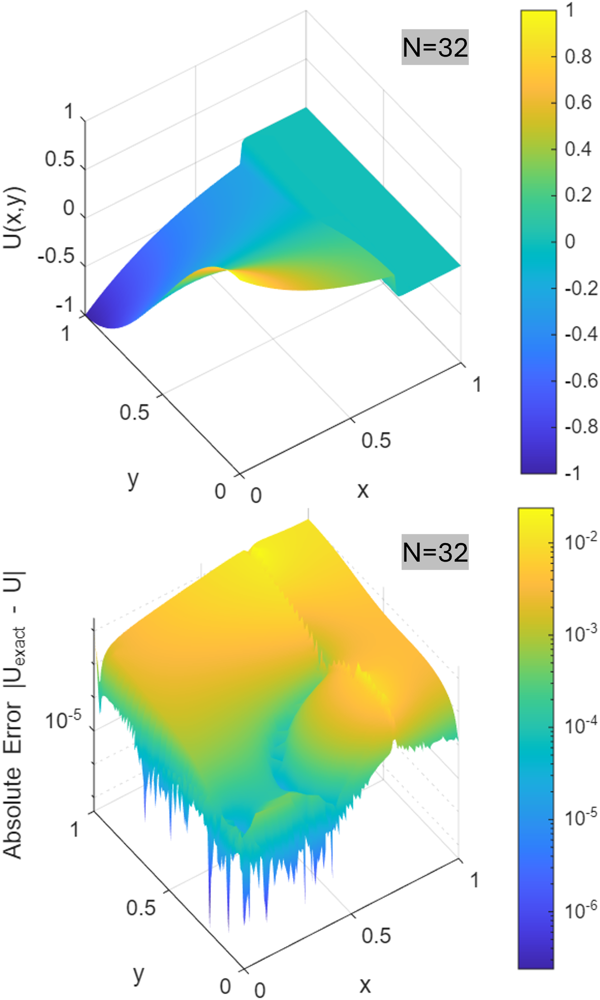

Papaer_kr
Control of Convective Asymmetry in Nonlinear Discrete Systems Using Graph Laplacian and Algebraic Projection
Kibeom Kim1, Young Jun Yoon2*
2School of Electronic and Mechanical Engineering, Gyeongkuk National University, Andong, Republic of Korea (yjyoon@gknu.ac.kr)
*Correspondence: Young Jun Yoon
Abstract
매질 불연속성과 대류 성분을 포함하는 비선형 편미분 방정식의 이산화 시스템은 자코비안(Jacobian) 연산자의 비정규성(non-normality)을 유발하여 비선형 해법의 스펙트럼 편향 및 수렴성 저하의 원인이 된다. 시스템 안정화를 위한 경험적 완화 계수 도입이나 수치적 확산 오차의 적용은 이산화 과정의 수학적 일관성을 변화시키며, 그래프 라플라시안 기반의 기하학적 정칙성 확보만으로는 고유벡터 기저의 비직교성을 상쇄하는 데 한계가 있다. 이에 본 연구는 경험적 파라미터 조정을 배제하고, 선형 연립방정식 차원에서의 대수적 투영(algebraic projection)을 통해 대류적 비대칭성을 제어하는 수치해석 기법을 제안한다.
본 연구에서는 선형 연산자의 레지듀 사상을 정의하여 프레셰 도함수(Fréchet derivative) 내부에 포함된 1계 대류 잔차를 대수적으로 분리하였다. 분리된 연속계 잔차를 이산 공간으로 사상하여 이산 교환자 오차(discrete commutator error) 기반의 국소 비대칭 지표를 도출하였다. 해당 지표를 이산 구배(discrete gradient) 연산자로 기능하는 간선-노드 결합 행렬(edge-node incidence matrix) 기반의 과결정(overdetermined) 선형 연립방정식으로 구성하고, 이산 헬름홀츠-호지 분해(DHHD)를 적용하여 유효 자코비안의 반대칭 성분을 분리 및 감산하는 대칭 전제조건자(symmetric preconditioner)를 설계하였다.
제안된 기법은 제조해 기법(MMS)을 활용한 1차원 및 2차원 특이 섭동 시스템에서 검증되었다. 수치 실험 결과, $\sigma=10^{-3}$ 의 투과율 단차와 $k_{nl}=4.0$ 의 비선형성 조건에서 원시 자코비안 대비 968.9배의 조건수 안정화 배율을 도출하였다. 본 알고리즘은 비선형 시스템 내부의 교차 결합 비대칭성을 선형대수학적 연산으로 보정함으로써, 부가적인 수치 소산 항의 개입 없이 유한체적법(FVM)의 점근적 2차 수렴성을 만족함을 확인하였다.
CHAPTER 1. INTRODUCTION
비선형 편미분 방정식(Nonlinear Partial Differential Equations, PDEs)은 경계층(boundary layers), 충격파, 그리고 매질 불연속성이 존재하는 영역에서 상태 변수 구배를 형성한다. 이러한 시스템을 유한체적법(FVM) 등 이산 공간으로 투영하여 선형화할 경우, 프레셰 도함수(Fréchet derivative)인 자코비안(Jacobian) 연산자는 대류 성분에 의해 구조적인 비정규성(non-normality)을 나타낸다 [1, 2]. 비정규 연산자 시스템의 스펙트럼은 서로 직교하지 않는 고유벡터 기저(skewed basis)를 형성하며, 이는 고유값들이 복소 평면의 안정 영역에 위치하더라도 단기적인 뉴턴 반복 척도에서 섭동의 과도 성장(transient growth)의 원인이 된다 [3, 4]. 이러한 조건수 악화(ill-conditioning)는 크릴로프(Krylov) 부분공간 해법의 수렴 속도를 저하시키고, 비선형 반복 해법 발산의 요인으로 작용한다 [5, 6, 7]. 연속계 보존 법칙을 비균일 격자망으로 이산화할 때 발생하는 유효 속도장 발산의 이산 교환자 오차(discrete commutator error)를 억제하기 위해, 오차 밀도에 따라 격자점의 좌표를 재배치하는 r-적응형(r-adaptive) 위상 사상 기법이 광범위하게 활용된다 [8, 9, 10, 11]. 특히 그래프 라플라시안(Graph Laplacian)과 조화 사상(harmonic mapping)에 기반한 적응형 격자 생성은 격자 왜곡(mesh distortion)을 분산시키고 격자 꼬임(mesh tangling)을 방지하는 데 효과적이다 [12]. 그러나 이러한 기하학적 정칙성 확보만으로는 대류항이 유발하는 자코비안의 고유 비대칭성을 제거하기 어려우며, 잔존하는 대수적 스펙트럼의 왜곡을 제어하기 위한 명시적인 전제조건화(preconditioning)가 요구된다 [13, 14].
이에 본 연구는 경험적 파라미터 조정 및 부가적인 수치 소산 항의 적용을 배제하고, 선형대수학적 연산을 통해 비선형 시스템의 대류적 비대칭성을 제어하는 수치해석 기법을 제안한다. 선형 연산자의 레지듀 사상(residue mapping)을 도입하여 자코비안 내부의 1계 대류 잔차를 대수적으로 분리한다. 분리된 잔차를 기반으로 국소 비대칭 지표를 도출하여 그래프 라플라시안 기반의 기하학적 위상 사상을 수행한다. 본 연구에서는 시스템의 교차 비대각 성분비로 추출된 대수적 투영 벡터가 유한체적법(FVM) 공간의 기하학적 체적비 및 표류 속도의 1차원 선적분과 해석적으로 동치(equivalent)임을 증명한다. 이를 이산 헬름홀츠-호지 분해(Discrete Helmholtz-Hodge Decomposition, DHHD)와 결합함으로써, 유효 자코비안의 반대칭 성분만을 잔차 공간에 고립시키고 선형 솔버의 탐색 영역을 대칭화하는 전제조건자를 설계한다 [15].
제안된 대수적 보정 기법의 수학적 일관성과 이산화 차수를 검증하기 위해, 본 연구는 제조해 기법(Method of Manufactured Solutions, MMS)을 적용하여 오차 평가를 수행한다 [16, 17, 18]. 해석적 정해가 부재하는 매질 불연속성 및 곡률 변화 조건 하에서도, 제안된 알고리즘이 부동소수점 오차에 기인한 발산을 억제하고 이론적인 점근적 2차 수렴성을 만족함을 확인한다. 본 논문의 구성은 다음과 같다. 2장에서는 비정규 연산자의 레지듀 사상 및 프레셰 도함수 전개를 다루며, 3장에서는 이산 교환자 오차 기반의 대수적 전제조건화 절차를 구축한다. 마지막으로 4장에서는 1차원 및 2차원 특이 섭동 시스템에 대한 수치적 실험 결과를 기술한다.
CHAPTER 2. 비정규 연산자의 레지듀 사상과 프레셰 도함수 전개
본 장에서는 비선형 시스템의 자코비안(Jacobian) 행렬이 이산 공간에서 조건수(condition number) 증가를 유발하는 원인을 대수적으로 분석한다. 선형 연산자 $L$에 대한 레지듀 변환(residue transform)을 정의하고, 이를 바탕으로 프레셰 도함수(Fréchet derivative)에서 비대칭성의 요인이 되는 1계 대류 연산자(advection operator)의 약형식(weak form)을 도출한다.
2.1 비정규 연산자의 대수적 레지듀 사상
미분 연산자의 대수적 특성을 분석하기 위해, 복소 힐베르트 공간(complex Hilbert space) $H$ 상에서 상태 함수 $\phi, \psi \in H$에 대한 내적 $\langle\phi,\psi\rangle=\int_{\Omega}\phi^{*}\psi d\Omega$ 를 정의한다 [19]. 여기서 상첨자 $*$는 해당 상태 함수의 복소 켤레(complex conjugate)를 지칭한다. 편미분 방정식의 이산화 과정에서 미분 연산자의 대칭성(symmetry)과 형식적 수반 연산자(formal adjoint operator) 간의 관계를 보존하는 것은 물리적 보존 법칙과 수치적 안정성을 확보하기 위한 주요 전제이다 [20, 21, 22]. 그러나 대류항 등에 의해 시스템의 전역적 자기 수반성(self-adjointness)이 성립하지 않는 경우, 본 연구는 임의의 연산자 $L$과 그 형식적 수반 연산자 $L^{\dagger}$ 사이의 차이를 정량화하기 위해 레지듀 변환 연산자 $\mathcal{R}$을 다음과 같이 정의한다.
$$ \mathcal{R}(L) \equiv L - L^\dagger $$내적 공간의 약형식 전개는 다음과 같다.
$$ \langle \phi, \mathcal{R}(L) \psi \rangle \equiv \langle \phi, (L - L^\dagger) \psi \rangle = \langle \phi, L \psi \rangle - \langle \phi, L^\dagger \psi \rangle $$레지듀 연산자는 선형 연산자의 가산성(additivity)과 동차성(homogeneity)을 보존한다. 스칼라 계수 $\alpha, \beta \in \mathbb{R}$ 와 연산자 $A, B$ 의 선형 결합에 대하여 다음이 성립한다.
$$ \mathcal{R}(\alpha A + \beta B) = \alpha \mathcal{R}(A) + \beta \mathcal{R}(B) $$일반적으로 비선형 편미분 방정식의 이산화 시스템에서 대류 성분이 지배적인 경우, 자코비안 연산자는 구조적인 비정규성(non-normality)을 띠게 된다. 비정규 연산자 시스템의 스펙트럼은 고유벡터들이 서로 직교하지 않는 비직교 기저(non-orthogonal basis)를 형성한다 [3, 4]. 이로 인해 단기적인 뉴턴 반복 척도에서 비직교성에 의한 섭동이 과도 성장의 원인이 된다 [23]. 따라서 본 연구에서 도입한 레지듀 사상은 고유값 분석만으로는 포착할 수 없는 이러한 비정규성 증폭 원인을 대수적으로 진단하는 도구로 작용한다.
2.2 프레셰 도함수 전개와 1계 대류 잔차의 대수적 분리
보존계 지배 방정식 $F(u) = D(p(u)Du) - q(u) = 0$ 의 프레셰 도함수인 자코비안 $J = \partial F / \partial u$ 를 전개한다 [24, 25, 26]. 여기서 $D$는 공간 상의 추상 미분 연산자이며, $q(u)$는 상태 변수 $u$에 종속적인 비선형 소스항(source term)이다. 상태 변수 $u$에 대한 미소 섭동 $\delta u$ 에 대하여 자코비안 연산자 방정식 $J \delta u = F(u + \delta u) - F(u)$ 는 다음과 같이 도출된다.
$$ J \delta u = \underbrace{D(p(u) D\delta u)}_{L_2} + \underbrace{D \left( \frac{\partial p}{\partial u} Du \delta u \right)}_{L_1} \underbrace{- \frac{\partial q}{\partial u} \delta u}_{L_0} $$상태 변수 구배($Du$)와 물성 변화율($\partial p/\partial u$)의 곱을 유효 표류 속도 $v \equiv (\partial p/\partial u) (Du)$ 로 정의하면, 1계 항은 $L_1 = D(v \cdot)$ 형태의 대류 연산자로 변환된다 [27, 28]. 자코비안 $J = L_2 + L_1 + L_0$ 에 레지듀 연산자를 분배한다.
$$ \mathcal{R}(J) = \mathcal{R}(L_2) + \mathcal{R}(L_1) + \mathcal{R}(L_0) $$콤팩트 지지(compact support) 검사 함수 공간 $C_c^\infty(\Omega)$에서의 부분 적분을 통해 각 항을 평가한다 [29, 30]. 0계 항 $L_0 = -\partial q/\partial u$ 와 2계 항 $L_2 = D(pD \cdot)$ 는 형식적 자기 수반성을 가지므로 레지듀가 소멸한다 ($\mathcal{R}(L_0) = 0, \mathcal{R}(L_2) = 0$). 따라서 자코비안의 비정규성은 1계 대류 연산자 $L_1$ 에 의존한다. 부분 적분에 의해 $L_1^\dagger = -vD$ 로 결정되므로 레지듀 사상은 다음과 같이 전개된다.
$$ \mathcal{R}(L_1)\psi = (L_1 - L_1^\dagger)\psi = D(v\psi) - (-vD\psi) = D(v\psi) + v(D\psi) $$라이프니츠 법칙(Leibniz rule) $D(v\psi) = (Dv)\psi + v(D\psi)$ 를 적용하여 식을 분해하면 다음과 같다.
$$ \mathcal{R}(L_1)\psi = \left[ (Dv)\psi + v(D\psi) \right] + v(D\psi) = (Dv)\psi + 2v(D\psi) $$이를 약형식으로 표현하면, 비선형 자코비안 행렬 내부의 대류 잔차는 다음과 같이 규명된다.
$$ \langle \phi, \mathcal{R}(J)\psi \rangle_\Omega = \langle \phi, \left[ (Dv)\psi + 2v(D\psi) \right] \rangle_\Omega $$이 결과는 유효 표류 속도의 발산량($Dv$)과 동질적 이류 작용($2vD$)의 결합이 시스템 비대칭성의 원인임을 나타내며, 3장에서 이산 공간의 교환자 오차(commutator error)를 분석하는 기준으로 활용된다.
CHAPTER 3. 이산 교환자 오차 및 대수적 전제조건화
본 장에서는 2장에서 도출된 대류 잔차 약형식을 이산 공간의 선형 대수 시스템으로 사상한다. 이를 기반으로 r-적응형(r-adaptive) 위상 사상을 수행하고, 시스템의 비대칭성을 제어하기 위한 대칭 전제조건자(symmetric preconditioner)를 설계한다.
3.1 이산 교환자 오차 기반의 국소 비대칭 지표 도출
이산화 대상은 유효 속도장의 발산이 상태 함수에 작용하는 성분인 $(Dv)\psi$ 이다. 이를 직접 점-평가(point-wise evaluation)할 경우 발생하는 수치적 진동을 제어하기 위해, $D(v\psi)=(Dv)\psi+v(D\psi)$ 를 역으로 변환한 관계식을 이용한다 [31, 32].
$$ (Dv)\psi = D(v\psi) - v(D\psi) $$상태 함수 $\psi$ 와 유효 속도장 $v$ 에 대한 노드 $k$ 에서의 전체 물리량 이산 미분 합산은 $[D(v\psi)]_k = \sum_{j} \hat{D}_{kj} (v_j \psi_j)$ 이다. 이산 미분 연산자의 특성에 따라 각 행의 가중치 합은 영($\sum_j \hat{D}_{kj} = 0$)이 되므로, 이에 기초하여 $v_k \psi_k \sum_j \hat{D}_{kj} = 0$ 이 성립한다 [33]. 이를 초기 합산식에서 감산한다.
$$ [D(v\psi)]_k = \sum_{j} \hat{D}_{kj} (v_j \psi_j - v_k \psi_k) $$대수적 항등식 $v_j \psi_j - v_k \psi_k = (v_j - v_k)\psi_j + v_k(\psi_j - \psi_k)$ 를 적용하여 식을 분리한다.
$$ [D(v\psi)]_k = \sum_{j} (v_j - v_k) \hat{D}_{kj} \psi_j + \sum_{j} v_k \hat{D}_{kj} (\psi_j - \psi_k) $$두 번째 합산항은 $\sum_j v_k \hat{D}_{kj} \psi_j - v_k \psi_k \sum_j \hat{D}_{kj}$ 로 전개되며 영합 조건에 의해 $\sum_j v_k \hat{D}_{kj} \psi_j$ 로 축약된다. 이는 이류항 $v(D\psi)$ 의 이산 형태이다. 결과적으로 $(Dv)\psi$ 의 이산 사상 결과는 첫 번째 합산항으로 확정되며, 이를 수식으로 나타내면 다음과 같다.
$$ (Dv)\psi = \sum_{j} (v_j - v_k) \hat{D}_{kj} \psi_j $$연속계 잔차 $(Dv)\psi + 2v(D\psi)$ 에 해당하는 이산 형태를 각각 대입하여 결합하면 노드 $k$ 에 작용하는 국소적 단방향 텐션(directional tension) $\mathcal{T}_{kj}$ 가 도출된다.
$$ \mathcal{T}_{kj} = (v_j + v_k) \hat{D}_{kj} \psi_j $$노드 간 교차 텐션 지표 $S_{kj}$ 는 방향성 상쇄를 방지하기 위해 절댓값의 산술 평균으로 정의한다.
$$ S_{kj} = \frac{1}{2} \left( |\mathcal{T}_{kj}| + |\mathcal{T}_{jk}| \right) $$이산 도메인 전역의 최대 텐션 지표 $\max(S)$로 정규화된 무차원 지표 $\bar{S}_{kj} = S_{kj} / \max(S)$를 도입하여, 노드 간 가중치 행렬 $W_{kj} = 1.0 + \bar{S}_{kj}$ 를 구성한다. 이 가중치 $W_{kj}$ 는 이산 격자망을 가상의 스프링 네트워크로 간주할 때, 인접한 두 노드를 연결하는 스프링의 국소적 강성으로 작용한다. 시스템의 전체 변형 에너지가 최소화되는 평형 상태는 각 내부 노드 $i$ 에 작용하는 장력의 합이 영벡터가 되는 조건으로 결정된다.
$$ \sum_{j \in \mathcal{N}(i)} W_{ij} (\mathbf{X}_j - \mathbf{X}_i) = \mathbf{0} $$이 국소 평형 조건들을 전역 시스템으로 확장하면 그래프 라플라시안을 통한 행렬식이 구성된다 [34].
$$ \hat{L}_{sys} = \hat{K} - \hat{W} $$$$ \tilde{L}_{sys} \mathbf{X}_{new} = \mathbf{B}_{ref} $$여기서 대각 행렬 $\hat{K}$는 각 노드에 연결된 인접 가중치의 합($K_{ii} = \sum_j W_{ij}$)을 나타내는 차수 행렬(degree matrix)이다. 또한 $\tilde{L}_{sys}$는 순수 라플라시안 $\hat{L}_{sys}$에 디리클레(Dirichlet) 경계 노드의 강제 변위 조건이 부과된 수정 연산자이며, 우변의 $\mathbf{B}_{ref}$는 고정된 경계 좌표값을 포함하는 구속 벡터를 의미한다. 이를 통해 도출된 좌표계 $\mathbf{X}_{new}$ 상의 각 노드 체적 $V_k^*$를 다시 계산하여 다음의 듀얼 체적 메트릭(dual volume metric)을 도출한다 [35].
$$ \hat{G} = \text{diag}(V_0^*, V_1^*, \dots, V_{N-1}^*) $$교환자 오차 기반의 국소 지표를 가중 그래프 라플라시안(Weighted Graph Laplacian) 시스템으로 추상화하여 조화 사상을 수행하는 본 방식은, 오차 구배가 존재하는 영역으로 노드를 밀집시키면서도 이산 시간 적분 과정에서 자코비안 행렬식의 양수(positivity) 특성을 대수적으로 보존한다 [36]. 이를 통해 특이 섭동 조건에서도 격자 요소가 뒤집히는 격자 꼬임(mesh tangling) 현상을 방지하고 기하학적 정칙성(regularity)을 유지한다.
3.2 대수적 투영 기반의 대칭 전제조건자 설계
도출된 기하학적 메트릭 $\hat{G}$와 변환을 위한 대각 행렬 $\hat{C}$를 잔차 벡터 $F(u)$에 적용하여 새로운 시스템 $\tilde{F}(u) = \hat{C}\hat{G}F(u) = 0$을 구성한다. 상태 변수가 $u+\delta u$로 섭동할 때 1차 근사는 다음과 같다.
$$ \tilde{F}(u+\delta u) \approx \tilde{F}(u) + \left( \frac{\partial\hat{C}}{\partial u}\hat{G}F(u) + \hat{C}\frac{\partial\hat{G}}{\partial u}F(u) \right) \delta u + \hat{C}\hat{G}\hat{J}\delta u $$뉴턴 반복이 진행됨에 따라 $F(u) \to 0$ 이면, 유효 자코비안은 $\tilde{J} = \hat{C}\hat{G}\hat{J}$로 근사된다. 여기서, $\hat{J}$는 원본 자코비안이다.
유효 자코비안 $\tilde{J}$의 대칭성을 유도하기 위해 교차 비대각 성분에 대한 크기 보존 제약 조건 $|\tilde{J}_{ij}| = |\tilde{J}_{ji}|$ 를 부과한다. 이를 성분별로 전개하면 다음과 같은 등식이 요구된다.
$$ c_i |(\hat{G}\hat{J})_{ij}| = c_j |(\hat{G}\hat{J})_{ji}| $$대각 성분을 지수 함수 $c_i = e^{x_i}$ 로 설정하여 양수 조건을 만족시킨 후 양변에 자연로그(natural logarithm)를 취하여 대수적 차이 $b_{ij}$를 도출한다. 이것은 인접한 두 노드 $i$ 와 $j$ 를 연결하는 간선(Edge) 상에 정의되는 벡터적 지표이다.
$$ \ln(c_i) - \ln(c_j) = \ln\left( \frac{|(\hat{G}\hat{J})_{ji}|}{|(\hat{G}\hat{J})_{ij}|} \right) \equiv b_{ij} $$치환 변수 $x_i = \ln(c_i)$에 대하여, 위 식은 $\hat{S}\mathbf{x} = \mathbf{b}$ 형태의 과결정(overdetermined) 선형 연립방정식이다. 여기서 행렬 $\hat{S}$는 이산 체적망의 위상적 연결성을 나타내는 간선-노드 결합 행렬(edge-node incidence matrix)로서, 간선의 방향성에 따라 ${-1, 1, 0}$의 원소를 가지는 이산 구배(discrete gradient) 연산자이다. 이것을 통해 도출된 $x_i$ 는 각 간선들에 흩어져 있는 국소 비대칭 지표 $b_{ij}$ 의 보존성(무회전) 성분을 도메인 전체에 대해 공간 적분하여 도출해 낸 전역적 포텐셜 장(Potential field)을 의미한다 [37]. 디리클레 경계 노드에 기준점 조건을 부과한 후 최소자승법(least squares method)을 통해 해 $\mathbf{x}_{LS}$를 도출하고 대각 행렬 $\hat{C}$를 확정한다. 해당 선형 시스템을 해석하기 위해 적용된 이산 헬름홀츠-호지 분해(DHHD)와 비대칭 성분의 상쇄 효율 분석은 Appendix A에 기술되어 있다.
3.3 대수적 투영 벡터의 기하학적·물리적 동치성 증명
$b_{ij}$ 지표는 원본 자코비안 행렬 내부에서 물리적 표류 속도와 기하학적 체적비에 의해 발생하는 플럭스의 국소적 불균형(Imbalance)을 나타낸다. 연속계 자코비안 연산자 내부의 식 $-p\nabla \psi + \mathbf{v}\psi$ 에 대한 잔차 방정식 $F_i = 0$ 은 유한체적법(FVM) 원리에 따라 가우스 발산 정리가 적용되어 노드 $i$ 의 체적 표면적 $\partial \Omega_i$ 에 대한 면적분으로 변환된다 [38].
$$ \iint_{\partial \Omega_i} (-p \nabla \psi + \mathbf{v} \psi) \cdot \mathbf{n} dA = \sum_{j} \Gamma_{i \to j} $$간선의 단위 방향 벡터를 $\mathbf{e}_{ij}$ 라 하고 1차원 좌표를 $\xi$ 로 설정하면, 단면적 $A_{ij}$ 에 대한 1차원 방향 도함수는 $\Gamma_{i \to j} = A_{ij} ( -p(\xi)d\psi/d\xi + v(\xi)\psi )$ 이다. 여기에서 $v(\xi) = \mathbf{v} \cdot \mathbf{e}_{ij}$.간선 내부는 소스항이 부재하므로 해당 상미분방정식은 공간에 독립적인 상수 $C^*$ 이다 [39]. 적분 인자(integrating factor)를 적용하여 완전 미분 형태로 치환된다.
$$ \frac{C^*}{p(\xi)} \exp\left(-\int_{\xi_i}^\xi \frac{v(s)}{p(s)} ds\right) = -\frac{d}{d\xi} \left[ \psi(\xi) \exp\left(-\int_{\xi_i}^\xi \frac{v(s)}{p(s)} ds\right) \right] $$구간 $[\xi_i, \xi_j]$ 에 대하여 정적분하면 노드 상태 변수에 대한 관계식이 도출된다.
$$ C^* = \frac{1}{R_{ij}} \psi_i - \frac{1}{R_{ij}}\exp\left(-\int_{\xi_i}^{\xi_j} \frac{v(s)}{p(s)} ds\right) \psi_j $$여기서 유효 기하 저항 $R_{ij}$ 는 다음과 같이 정의된다.
$$ R_{ij} \equiv \int_{\xi_i}^{\xi_j} \frac{1}{p(\xi)} \exp\left(-\int_{\xi_i}^\xi \frac{v(s)}{p(s)} ds\right) d\xi $$이산 자코비안 행렬 $\hat{J}$ 의 교차 결합 성분은 $\hat{J}_{ij} = \partial F_i / \partial \psi_j$ 이다. 대각 메트릭 $\hat{G}$ 가 곱해진 투영 벡터 $b_{ij}$ 에 이를 대입한다.
$$ b_{ij} \equiv \ln \left( \frac{V_j^* |\hat{J}_{ji}|}{V_i^* |\hat{J}_{ij}|} \right) $$면적 대칭성($A_{ij} = A_{ji}$)으로 인해 단면적과 기하 저항 $R_{ij}$ 가 약분되며, 벡터 $b_{ij}$ 는 기하 체적비와 물리적 페클레 장(Péclet field)의 1차원 선적분 합으로 변환된다.
$$ b_{ij} = \ln\left(\frac{V_j^*}{V_i^*}\right) + \int_{\xi_i}^{\xi_j} \frac{v(s)}{p(s)} ds \equiv \ln\left(\frac{V_j^*}{V_i^*}\right) + \int_i^j \left(\frac{\mathbf{v}}{p}\right) \cdot d\mathbf{l} $$3.4 유효 자코비안의 반대칭 성분 고립과 탐색 행렬 구성
유효 자코비안 $\tilde{J}$는 대칭 성분 $\hat{H} = \frac{1}{2}(\tilde{J} + \tilde{J}^T)$와 반대칭 성분 $\hat{A}{raw} = \frac{1}{2}(\tilde{J} - \tilde{J}^T)$로 분리된다. 내부 도메인 $\mathcal{I}$에 대응하는 반대칭 성분 $\hat{A}_{int}$를 고립시키기 위해, 경계 노드에서 0, 내부 노드에서 1을 가지는 대각 행렬 $\hat{M}_s$를 사용하여 전후에 곱한다.
$$ \hat{A}_{int} = \hat{M}_s \hat{A}_{raw} \hat{M}_s $$고유 비대칭 성분 $\hat{A}_{int}$를 지배 방정식의 우변 잔차 $F(u)$에는 보존하되, 선형 솔버의 탐색 행렬인 전제조건자 $\hat{J}_{pure}$ 를 구성할 때에는 이를 대수적으로 감산하여 분리한다.
$$ \hat{J}_{pure} = \tilde{J} - \hat{A}_{int} $$본 연구는 대칭 전제조건자 $\hat{J}_{pure}$를 탐색 행렬로 사용하는 부정확 뉴턴법(Inexact Newton Method)을 채택한다 [40, 41]. 선형화 시스템 $\hat{J}_{pure} \delta u = -F(u)$ 에 대하여 수렴 상태($\delta u \to 0$)에 도달하면 항등적으로 물리적 잔차 $F(u^*) = 0$ 이 성립한다. 이와 같이 구성된 전제조건자 연산자의 스펙트럼(spectrum)이 제한된 복소 원판 내에 위치하여 수렴성이 보장됨을 입증하는 해석학적 증명은 Appendix B에 기술되어 있다.
CHAPTER 4. 수치적 실험 및 검증
알고리즘의 대수적 제어 성능과 수치적 이산화 차수를 평가하기 위해, 본 장에서는 제조해 기법(Method of Manufactured Solutions, MMS)을 활용하여 방정식 우변의 강제 소스항 $Q(x)$를 역산하여 도출한다. 해석적 정해가 부재하거나 매질 불연속성을 포함하는 편미분 방정식의 수치 검증에 도입되는 MMS는, 이산화 오차의 누적 및 구현상의 논리적 결함을 독립적으로 식별하는 검증 수단으로 작용한다 [42, 43, 44]. 본 연구는 이를 통해 대수적 보정 기법이 적용되는 조건에서도 유한체적법(Finite Volume Method, FVM) 고유의 점근적 수렴성($\mathcal{O}(\Delta x^2)$)이 일관되게 달성됨을 정량적으로 확인한다.
본 연구에서 제안하는 대수적 보정 기법은 비선형 연산자의 조립 단계부터 반대칭 성분 추출에 이르는 명시적인 대수적 제어(algebraic control)를 포함한다. 이에 따라 알고리즘의 제어 계층(control layer)과 선형대수 연산 계층(linear algebra layer)을 분리하여 64-bit double precision 환경에서 직접 구현하였으며, 범용 자동 미분 라이브러리나 상용 PDE 패키지의 사용은 배제하였다. 본 수치 기법을 구성하는 세부 알고리즘 및 기하-대수적 제어 절차는 다음과 같다.
격자 이동 제어 단계에서는 3.1절에서 도출된 이산 공간 국소 비대칭 지표 $S_{kj}$를 기반으로 r-적응형(r-adaptive) 격자 이동을 수행한다. 오차가 발생하는 구역의 기하학적 특성을 가중치 행렬 $\hat{W}$에 반영하고, 이를 바탕으로 그래프 라플라시안(Graph Laplacian) 시스템을 구성하여 조화 사상(harmonic mapping) 방정식을 도출한다 [45, 46]. 이 과정에서 계면 인접 노드의 자동 스내핑(auto-snapping)을 적용하여, 물성 계면이 단일 요소(element)를 관통할 때 발생하는 조화 평균 역설(harmonic mean paradox) 및 대수 왜곡을 방지한다. 이산 노드가 물리적 계면으로부터 요소 길이의 절반 미만 거리로 접근할 경우 해당 노드의 좌표를 계면 위치로 조정한다. 이를 통해 초기 격자망이 계면과 일치하여 이산화 오차가 상쇄되는 현상(accidental error cancellation)을 통제한다.
격자 재배치 과정에서 발생하는 기하학적 변형에 의한 잔여항(residual) 증가를 제어하기 위해, 최적 상태 복원(optimal state rollback) 기법을 적용하였다 [47]. 매 반복 단계에서 비선형 잔여항의 노름(norm)을 계산하고, 최소 오차를 나타내는 기하 좌표와 상태 변수를 저장한다. 격자 이동 후 오차가 증가할 경우 시스템을 이전 상태로 복구하고 격자의 위상 변형을 동결(mesh freezing)하여 점근적 수렴성을 유도한다. 비선형 잔차($R$) 및 프레셰 도함수(Fréchet derivative, $\hat{J}$)의 조립은 해석적(analytical) 미분 법칙에 기반한다. 공간 적분은 1차원 도메인에서 다점 가우스-르장드르 구적법(multi-point Gauss-Legendre quadrature)을, 2차원 비구조적 격자계에서는 간선 중점 평가(edge-midpoint evaluation)를 적용하였다 [48, 49].
대수적 정규화 단계에서는 3.2절의 수반 일관성(adjoint consistency) 조건을 만족하도록 내부 레지듀를 최소화하는 대각 정규화 행렬 $\hat{C}$를 최소자승법(least squares)으로 도출한다 [50]. 또한 디리클레 경계 조건이 내부 노드의 연산자 구조에 미치는 영향을 통제하기 위해, 사영 연산자(projection operator) 형태의 마스크 행렬 $\hat{M}_s$를 적용한다. 이를 바탕으로 시스템의 비대칭성으로부터 내부 수치적 반대칭 성분($\hat{A}_{int}$)을 분리하고, 이를 원시 자코비안에서 감산하여 보정된 자코비안($\hat{J}_{pure}$)을 구성한다. 선형 연립방정식($\hat{J}_{pure} \delta u = -R$)의 풀이에는 UMFPACK 기반 직접 희소 해법(direct sparse solver)을 적용하였다. 표에서 제시되는 보정된 조건수 $\text{Cond}(CJ)$는 기하학적 메트릭 적용 및 수치적 반대칭 성분 분리 절차를 거쳐 최종 구성된 선형 해법의 탐색 행렬 $\hat{J}_{pure}$에 대한 조건수를 의미한다.
4.1 1차원 특이 섭동 시스템의 대수적 검증
무차원 유클리드 1차원 도메인 $\Omega = [0, 1]$ 상에서, 상태 종속적 비선형 확산 계수 $P(u, x)$를 가지는 강타원형(strongly elliptic) 보존 방정식은 다음과 같이 정의된다.
$$ \frac{d}{dx} \left( P(u, x) \frac{du}{dx} \right) = Q(x) \quad \text{in } \Omega $$도메인을 계면 $x_{int} = 0.2$ 위치를 기준으로 좌측과 우측 매질로 분할하며, 확산 계수 $P(u, x)$에 불연속성을 부여한다. 계면을 비대칭적 위치에 설정한 것은 초기 균일 격자망이 계면과 일치하여 보간 오차가 인위적으로 상쇄되는 기하학적 종속성을 배제하기 위함이다. 우측 매질에는 투과율 단차 계수 $\sigma$가 적용된다..
$$ P(u, x) = \begin{cases} 1 + u^2 & \text{if } x \le x_{int} \\ \sigma (1 + u^2) & \text{if } x > x_{int} \end{cases} $$제조해 기법(MMS)에 적용할 해석적 정해 $u_{exact}(x)$는 각속도 $k = 2\pi f$를 가지는 정현파(sinusoidal wave)를 기저 함수로 하여 다음과 같이 구성된다.
$$ u_{exact}(x) = \begin{cases} \sin(k x) + C_L x & \text{if } x \le x_{int} \\ \sin(k x) + C_R (x - 1) + U_{end} & \text{if } x > x_{int} \end{cases} $$여기서 1차 계수 $C_L$과 $C_R$은 계면 $x_{int}$에서의 전위 연속성($u_L = u_R$)과 비선형 플럭스 연속성($P_L u_L' = P_R u_R'$)을 만족하도록 도출된 상수이며, 우측 종단($x=1$)의 목표 전위는 $U_{end} = 1.0$으로 고정된다. 우측 종단에는 비대칭 로빈 혼합 경계 조건($\alpha=2.0, \beta=1.0$, $\alpha u + \beta J = \gamma$)을 부과하여, 자코비안 행렬 구축 과정에서 대류 잔차에 의한 비정규성을 시스템 전반으로 확산시킨다.
1) Case A: 공간 분해능 확장에 따른 점근적 수렴성 (Varying $N$)


Table 1: Relative error statistics and algebraic condition number stabilization for the r-adapted solutions across increasing spatial resolutions $N$ (Control parameters: $\sigma=10^{-3}, f=10.0$).
| N | L2 Error | Max Error | Raw Asymmetry | Treated Asym | Cond(J) | Cond(CJ) | Stabilization |
|---|---|---|---|---|---|---|---|
| 32 | 3.4549e-01 | 1.3116e+00 | 5.4299e+00 | 2.7285e-12 | 8.3301e+08 | 7.2358e+06 | 115.1 x |
| 64 | 9.7855e-05 | 5.6426e-04 | 2.3634e+00 | 3.6380e-11 | 2.8506e+09 | 2.8233e+07 | 101.0 x |
| 128 | 3.3071e-06 | 1.5701e-05 | 4.4337e+00 | 5.8208e-11 | 1.1737e+10 | 1.1470e+08 | 102.3 x |
| 256 | 5.2587e-08 | 2.5664e-07 | 8.7207e+00 | 3.2014e-10 | 4.8123e+10 | 4.5707e+08 | 105.3 x |
| 512 | 8.0688e-10 | 3.9522e-09 | 1.7467e+01 | 1.5134e-09 | 1.9457e+11 | 1.8354e+09 | 106.0 x |
| 1024 | 2.6417e-12 | 1.3726e-11 | 4.5867e+01 | 4.0745e-09 | 7.4929e+11 | 5.9766e+09 | 125.4 x |
| 2048 | 4.8565e-14 | 2.2263e-13 | 9.1750e+01 | 1.5134e-08 | 2.9987e+12 | 2.3906e+10 | 125.4 x |
| 4096 | 6.4140e-14 | 2.2971e-13 | 1.8330e+02 | 3.4925e-08 | 1.1981e+13 | 9.5508e+10 | 125.4 x |
첫 번째 실험은 통제 조건($\sigma=10^{-3}, f=10.0$) 하에서 검사 체적의 분해능 $N$을 $32$에서 $4096$까지 증가시키며, 이산화 차수와 대수적 정화 기법의 조건수 제어 성능을 분석한다.
표 1의 지표를 분석하면, 유한체적법의 셀 중심 기준 $L_2$ 전역 누적 오차는 초기 조대 격자($N=32$)에서 $3.45 \times 10^{-1}$ 수준이나, $N=64$ 단계에서 $9.78 \times 10^{-5}$로 하강한다. 이는 고주파 파동($f=10.0$)의 나이퀴스트 표본화(Nyquist sampling) 한계를 통과하며 해상도가 확보되는 사전 점근(pre-asymptotic) 구간의 특징이다. 이후 $N=1024$까지 오차가 하강하며, $N \ge 2048$ 구간에서는 절단 오차가 배정도(double-precision) 부동소수점 연산 한계인 $\mathcal{O}(10^{-14})$ 대역에 도달하여 수렴이 정체되나 수치적 발산 없이 안정적인 오차를 유지한다.
시 비대칭성(Raw Asymmetry) 지표는 격자 해상도가 증가함에 따라 약 2배 단위로 선형적인 증가 추세($\mathcal{O}(\Delta x^{-1})$)를 보이며 $N=4096$에서 $1.83 \times 10^2$에 도달한다. 이는 2장에서 기술된 바와 같이, 격자 간격이 세밀해짐에 따라 1계 대류 연산자의 이산 표상이 확대되어 행렬의 비정규성이 가중된 결과이다. 이에 따라 원시 자코비안의 조건수(Cond(J) Raw)는 $\mathcal{O}(\Delta x^{-2})$ 스케일로 상승하며 대수적 악조건을 심화시킨다. 반면, 3.2절의 이산 헬름홀츠-호지 분해(DHHD) 기반 대수적 투영을 적용한 경우, 잔류 비대칭 지표(Treated Asym)는 $\mathcal{O}(10^{-8}) \sim \mathcal{O}(10^{-12})$ 대역으로 제한되었다. 결과적으로 고해상도 한계 조건에서도 125.4배의 조건수 안정화 비율이 관측되었으며, 선형 수렴성이 보존됨을 확인하였다.
그림 1(c)에 도식된 검사 체적 압축 밀도 $\rho(x) = \Delta x_{init} / \Delta x$의 공간적 분포는, 조대 격자 및 중간 해상도 구간($32 \le N \le 512$)에서 투과율이 높은 좌측 매질($x \le 0.2$) 내 고주파 파동의 국소 구배에 대응하여 격자 밀집도가 변동함을 보여준다. 격자 해상도가 $N \ge 1024$ 이상으로 확장되면, 이산화 간격이 파동의 구배와 계면 불연속성을 해석할 수 있는 기하학적 분해능을 확보하게 된다. 이에 따라 국소 텐션이 도메인 전역에서 최소화되며 격자망 전체가 점근적 균일 상태(asymptotically uniform state)로 전이됨을 확인할 수 있다.
2) Case B: 매질 불연속성 변화에 따른 자코비안 대수적 강건성 검증 (Varying $\sigma$)
Table 2: Algebraic robustness indicators and relative error statistics under varying permeability contrast $\sigma$, demonstrating the suppression of spurious non-normality at material interfaces (Control parameters: $N=256, f=10.0$).
| Sigma | L2 Error | Max Error | Raw Asymmetry | Treated Asym | Cond(J) | Cond(CJ) | Stabilization |
|---|---|---|---|---|---|---|---|
| 1.0e-0 | 1.4316e-10 | 6.4240e-10 | 7.1925e+02 | 5.9117e-12 | 6.3281e+06 | 2.4651e+06 | 2.6 x |
| 1.0e-1 | 3.6596e-16 | 8.8818e-16 | 8.3734e+02 | 5.6843e-13 | 7.1949e+06 | 5.3237e+06 | 1.4 x |
| 1.0e-2 | 2.0606e-16 | 7.7716e-16 | 8.4983e+02 | 3.9790e-13 | 5.1846e+07 | 4.0170e+07 | 1.3 x |
| 1.0e-3 | 2.2195e-16 | 5.9674e-16 | 5.4430e+02 | 3.4106e-13 | 5.1598e+08 | 4.4068e+08 | 1.2 x |
두 번째 시나리오는 파동 주파수($f=10.0$)와 격자 수($N=256$)를 고정한 상태에서 투과율 단차 계수 $\sigma$를 $10^{-1}$에서 $10^{-4}$까지 감소시키며 대수적 왜곡과 안정화 효과를 측정한다.
매질 단차가 $\sigma = 10^{-3}$으로 증가함에 따라 원시 자코비안의 조건수는 $6.32 \times 10^6$에서 $5.15 \times 10^8$로 상승한다. 잔류 비대칭성(Treated Asym)이 $\mathcal{O}(10^{-12}) \sim \mathcal{O}(10^{-13})$ 대역으로 제어됨은, 대수적 보정 과정의 목적이 단순한 스칼라 스케일링이 아니라 교차 대칭성 감소를 보정하는 데 있음을 의미한다. 또한 $\sigma \le 10^{-1}$ 구간에서 $L_2$ 및 $L_\infty$ 오차가 $\mathcal{O}(10^{-16})$ 대역의 기계 정밀도에 수렴한다. 계면 인접 노드의 자동 스내핑(auto-snapping)이 적용된 이 결과는 제안된 기하학적 투영과 대수적 투영 기법이 유한체적법 계면에서의 이산 교환자 오차를 대수적으로 상쇄함을 보여준다.
3) Case C: 고주파 특이 곡률 확장에 따른 위상 적응 및 대수 제어 검증 (Varying $f$)
Table 3: Algebraic and numerical integrity metrics as a function of the wave frequency $f$, demonstrating the exponential growth of the stabilization factor under severe geometric tension (Control parameters: $N=256, \sigma=10^{-2}$).
| f | L2 Error | Max Error | Raw Asymmetry | Treated Asym | Cond(J) [원시] | Cond(CJ) [보정] | Stabilization |
|---|---|---|---|---|---|---|---|
| 1.0 | 2.6590e-14 | 5.7926e-14 | 2.1126e+02 | 5.6843e-14 | 3.2104e+06 | 2.4886e+06 | 1.3 x |
| 5.0 | 1.8283e-10 | 7.6680e-10 | 3.8471e+01 | 8.7311e-11 | 8.8909e+08 | 2.3659e+07 | 37.6 x |
| 10.0 | 9.1049e-09 | 4.4365e-08 | 1.1635e+01 | 2.3283e-10 | 5.0183e+09 | 4.0027e+07 | 125.4 x |
| 20.0 | 1.7316e-06 | 1.4969e-05 | 2.4254e+00 | 1.6298e-09 | 3.2588e+10 | 8.1369e+07 | 400.5 x |
세 번째 시나리오는 분해능($N=256$)과 투과율 단차($\sigma=10^{-2}$)를 고정한 상태에서, 파동 주파수($f$)를 $1.0$에서 $20.0$까지 증가시키며 국소적 곡률 증가에 의한 기하-대수적 상호작용을 분석한다.
파동 주파수 $f$가 상승함에 따라 상태 변수의 곡률이 증가하며, 이산화 시 공간 도함수를 평가하기 위한 국소 구배가 상승한다. 주파수 증가 시 원시 비대칭성 지표는 감소하며, 이는 고주파 대역에서 2계 타원형 미분 연산자가 1계 이류 연산자를 수치적으로 지배함에 따라 발생하는 거동이다. 비대칭성의 감소에도 불구하고 원시 자코비안의 조건수는 $f=20.0$ 조건에서 $3.25 \times 10^{10}$으로 크게 증가한다. 이는 r-적응형 엔진이 오차 구배에 대응하여 노드 좌표를 국소적으로 집중시킴에 따라 격자 간격 편차가 심화된 데 기인한다. 대수적 전제조건화 절차가 적용된 시스템은 보정된 자코비안의 조건수를 $8.13 \times 10^7$ 수준으로 억제하며 안정화 배율을 400.5배까지 상승시켰다. 이 결과는 부록 B에서 증명된 전제조건화된 연산자의 스펙트럼 상한($|\lambda - 1| \le \gamma_{int}$)이 위상 변형이 수반되는 상황에서도 유효함을 뒷받침한다.
4.2 2차원 특이 섭동 시스템의 대수적 검증
1차원 공간에서의 검증을 확장하여, 면적 벡터 방향의 교차 미분항(cross-derivative)이 수반되며 기하학적 자유도가 높은 2차원 비구조적 삼각 격자계(unstructured triangular mesh)를 대상으로 제안된 대수적 보정 기법을 검증한다. 2차원 도메인 $\Omega = [0, 1] \times [0, 1]$ 상에서 정의되는 비선형 타원형 편미분 방정식은 다음과 같다.
$$ \nabla \cdot \left( P(u) \nabla u \right) = Q(x, y) \quad \text{in } \Omega $$비정규성(non-normality)을 대수적으로 유도하기 위해 지수 함수 형태의 비선형 확산 계수 $P(u)$를 도입한다. 도메인은 수직 계면 $x_{int} = 0.7$을 기준으로 좌측 매질과 우측 매질로 분할되며, 우측 매질에는 투과율 단차 계수 $\sigma$가 적용된다.
$$ P(u, x, y) = \begin{cases} \exp(k_{nl} u) & \text{if } x \le x_{int} \\ \sigma \exp(k_{nl} u) & \text{if } x > x_{int} \end{cases} $$제조해 기법(MMS)의 해석적 정해로는 다음과 같은 2차원 지수 감쇠 모델을 적용하였다.
$$ u_{exact}(x, y) = \begin{cases} U_0 \exp(-\alpha_L x) \cos(\pi y) & \text{if } x \le x_{int} \\ U_0 \exp(-\alpha_L x_{int}) \exp(-\alpha_R (x - x_{int})) \cos(\pi y) & \text{if } x > x_{int} \end{cases} $$기준 진폭을 $U_0 = 1.0$, 좌측 매질의 감쇠율을 $\alpha_L = 2.0$으로 상정할 때, 우측 매질의 감쇠율 $\alpha_R$은 계면에서의 비선형 유량 보존 법칙($P_L \nabla u_L \cdot \mathbf{n} = P_R \nabla u_R \cdot \mathbf{n}$)에 의해 결정된다. 연속 조건($u_L = u_R$)에 의해 지수 비선형 항이 소거되므로, 우측 감쇠율은 투과율 단차에 반비례하는 $\alpha_R = \alpha_L / \sigma$ 로 도출된다. 우측 및 상단 경계에는 비대칭 로빈 혼합 조건($\alpha=2.0, \beta=1.0$)을 부과하여 시스템 전반의 교차 결합(cross-coupling) 비대칭성을 확산시켰다.
본 2차원 검증에서는 직교 초기 격자망을 기반으로, 물리적 계면($x=0.7$)을 포함하는 요소와 외각 경계면을 탐지하여 재귀적인 사분트리 공간 미세화(Quadtree h-refinement)를 수행하였다. 직교 초기 격자망에 대해 계면을 포함하는 요소를 4개의 하위 요소로 분할하는 사분트리 공간 미세화(Quadtree h-refinement)를 3단계 깊이로 수행한다. 이는 계면 인접 요소의 1차원 간선 길이를 초기 대비 $1/8$ 수준으로, 2차원 면적을 $1/64$ 크기로 세분화하는 과정이다. 이를 통해 계면 부근의 기하학적 분해능을 집중적으로 확보하며, 들로네 단체 변환(Delaunay Simplex Conversion)을 거쳐 매달린 노드(hanging node)가 없는 비구조적 삼각망을 조립한다. 이를 해소하기 위해, 국소 간선 길이의 49% 이내에 위치한 비정합 노드들을 계면 좌표로 이동(snapping)시키는 위상 제어를 연이어 수행한다. 이 과정에서 삼각형 요소의 면적 행렬식을 검사하여, 절점이 이동할 경우 요소가 뒤집히거나 면적이 음수가 되는 위상 역전(element inversion) 발생 노드는 이동을 기각함으로써 들로네(Delaunay) 삼각망의 기하학적 정칙성을 보존한다.
1) Case A: 공간 분해능 확장에 따른 점근적 수렴성 (Varying $N$)




Table 4: 2D algebraic asymptotic convergence and purification metrics across increasing spatial resolutions $N_x$ (Control parameters: $\sigma=10^{-2}, k_{nl}=2.0$).
| Nx | Nodes(N) | L2 Error | Max Error | Raw Asymmetry | Treated Asym | Cond(J) | Cond(CJ) | Stabilization |
|---|---|---|---|---|---|---|---|---|
| 8 | 434 | 6.2213e-02 | 1.7897e-01 | 5.3920e+01 | 5.2832e-02 | 1.5954e+05 | 1.9227e+04 | 8.3 x |
| 16 | 1106 | 1.7367e-02 | 8.2148e-02 | 8.6057e+01 | 8.4176e-03 | 2.3528e+05 | 3.7610e+04 | 6.3 x |
| 32 | 2834 | 5.0272e-03 | 2.3894e-02 | 7.0629e+01 | 1.9342e-03 | 7.5444e+05 | 1.1679e+05 | 6.5 x |
| 64 | 7826 | 2.5668e-03 | 1.0892e-02 | 6.4419e+02 | 2.8159e-02 | 2.6779e+08 | 5.3757e+07 | 5.0 x |
첫 번째 시나리오는 통제 조건($\sigma=10^{-2}, k_{nl}=2.0$) 하에서 1차원 선분당 해상도 $N_x$를 8에서 64로 확장하며, 비정합 격자계에서의 이산화 한계와 대수적 정화 기법의 점근적 수렴성을 분석한다.
그림 2는 기본 공간 분해능 $N_x=16$과 $N_x=32$ 조건에서의 해석적 정해 표면(상단)과 절대 오차의 3차원 산포도(하단)를 비교한다. 하단의 산포도를 분석하면, 절대 오차가 투과율 단차가 위치한 계면($x=0.7$) 부근에 국소화되어 집중됨을 알 수 있다. 해상도가 $N_x=16$에서 $N_x=32$로 증가함에 따라, 도메인 전반에 걸친 $L_2$ 오차의 노름이 $\mathcal{O}(10^{-2})$ 대역에서 $\mathcal{O}(10^{-3})$ 대역으로 하강하는 수렴 거동이 시각적으로 확인된다.
그림 3은 해당 계면($x=0.7$) 부근의 기하학적 위상 변화를 나타낸다. 상단 도식의 격자망은 직교 형태를 유지한 채, 공간 미세화가 적용되어 노드 밀도가 증가하였으나, 물성 경계(적색 실선)가 직각 삼각형 형태의 요소들을 임의로 관통하는 비정합(non-conforming) 상태이다. 반면, 하단은 최종적으로 확정된 격자망을 보여준다. 상단의 규칙적인 직교 기반 구조에서 계면과 가장 인접하게 배열되어 있던 수직 노드열이 $x=0.7$ 선상으로 이동되었다. 계면을 공유하게 된 좌우의 삼각형 요소들은 형태 왜곡이나 위상 역전 없이, 주어진 노드 이동량에 비례하여 신장 및 수축하며 기하학적 정칙성을 유지한다.
표 4는 이러한 기하학적 제어 하에서 해상도 $N_x$ 확장에 따른 시스템의 대수적 지표 변화를 정량적으로 제시한다. $N_x=64$ 구간에서 원시 비대칭성 지표는 $6.44 \times 10^2$ 로 관측되며 원시 자코비안의 조건수는 $2.67 \times 10^8$ 규모로 상승한다. 반면 3.2절에서 제시된 대수적 사영(least squares method)을 통해 시스템 내 교차 결합 성분을 분리 및 감산한 결과, 잔류 비대칭성은 $2.81 \times 10^{-2}$ 로 저감된다. 보정된 시스템의 $L_2$ 오차 노름은 $2.56 \times 10^{-3}$ 까지 하강하며 점근적 수렴성을 유지하였다.
2) Case B: 매질 불연속성 변화에 따른 자코비안 대수적 강건성 검증 (Varying $\sigma$)
Table 5: Algebraic condition number stabilization and error statistics under varying permeability contrast $\sigma$ (Control parameters: $k_{nl}=1.0, N_x=32$).
| Sigma | L2 Error | Max Error | Raw Asymmetry | Treated Asym | Cond(J) | Cond(CJ) | Stabilization |
|---|---|---|---|---|---|---|---|
| 1.00e+00 | 5.5767e-04 | 1.1162e-02 | 8.6578e+00 | 9.9182e-05 | 2.3282e+04 | 9.5227e+03 | 2.4 x |
| 1.00e-01 | 2.1215e-03 | 1.1090e-02 | 4.7600e+01 | 8.3343e-03 | 6.4476e+06 | 2.4953e+06 | 2.6 x |
| 1.00e-02 | 5.0586e-03 | 2.0978e-02 | 1.0521e+01 | 4.7938e-04 | 8.9129e+04 | 3.5703e+04 | 2.5 x |
| 1.00e-03 | 8.9624e-02 | 3.6077e-01 | 1.0973e+01 | 2.0716e-04 | 1.0274e+06 | 3.3225e+05 | 3.1 x |
두 번째 시나리오는 $k_{nl}=1.0$, $N_x=32$ 조건 하에서 투과율 단차 $\sigma$를 $1.0$에서 $10^{-3}$까지 점진적으로 축소시킨다. 해당 실험은 계면의 미분 불연속성이 격자의 기하학적 해상도 한계를 초과했을 때 유발되는 기하학적 위상 변형과 시스템의 대수적 안정성을 분석한다.
$\sigma=10^{-3}$ 조건에서 우측 매질의 지수 감쇠율은 계면 유량 보존 관계식($\alpha_R = \alpha_L / \sigma$)에 따라 $\alpha_R=2000$ 으로 급증하며 계면에 강한 미분 불연속성(kink)을 야기한다. 이는 계면 $x_{int} = 0.7$에서 지수 함수적 감쇠가 매우 좁은 영역에 집중됨을 의미하며, 이산화 시스템의 절단 오차(truncation error)를 증폭시키는 주요 요인이다. r-적응형 모듈은 해당 계면으로 격자점을 밀집시켜 구배를 해석하려 시도하나, 고정된 전체 노드 수의 한계로 인해 물리적 진해를 추적하지 못하는 서브그리드(sub-grid) 해상도 부족 상태에 직면한다.
$\sigma$가 감소함에 따라 원시 자코비안의 조건수는 $2.32 \times 10^4$에서 $1.02 \times 10^6$으로 상승하며, $L_2$ 오차 또한 $8.96 \times 10^{-2}$ 수준으로 증가한다. 그러나 이러한 수치적 해상도 부족 상황에서도 제안된 대수적 보정 기법은 비선형 해의 수치적 발산을 억제한다. 보정된 자코비안의 잔류 비대칭성은 $2.07 \times 10^{-4}$ 수준으로 낮게 유지된다. 이는 이산 헬름홀츠-호지 분해를 통해 추출된 무회전 비대칭 포텐셜 장이 대각 스케일링 행렬 $\hat{C}$로 투영되어, 자코비안 내부의 교차 비대각 성분 간 크기 불균형을 대수적으로 상쇄한 결과이다.
3) Case C: 비선형 강도 스윕에 따른 비대칭 제어 (Varying $k_{nl}$)
Table 6: Degradation of raw matrix asymmetry and subsequent stabilization via algebraic purification under varying nonlinear strength $k_{nl}$ (Control parameters: $\sigma=10^{-1}, N_x=32$).
| k_nl | L2 Error | Max Error | Raw Asymmetry | Treated Asym | Cond(J) | Cond(CJ) | Stabilization |
|---|---|---|---|---|---|---|---|
| 0.0 | 1.7916e-03 | 1.1231e-02 | 1.5343e+00 | 0.0000e+00 | 6.3622e+03 | 6.3622e+03 | 1.0 x |
| 1.0 | 2.0420e-03 | 1.1119e-02 | 8.6497e+00 | 9.8184e-05 | 3.1746e+04 | 1.4703e+04 | 2.2 x |
| 2.0 | 2.1919e-03 | 1.0989e-02 | 6.2066e+01 | 2.5039e-03 | 2.9539e+05 | 3.2127e+04 | 9.2 x |
| 4.0 | 2.5769e-03 | 1.0629e-02 | 3.3062e+03 | 6.2804e-01 | 2.2938e+08 | 2.3674e+05 | 968.9 x |
지막 시나리오는 $N_x=32$, $\sigma=10^{-1}$ 상태에서 비선형 확산 계수 $P(u) = \exp(k_{nl} u)$의 강도 지수 $k_{nl}$을 $0.0$에서 $4.0$까지 변화시키며, 프레셰 도함수의 비대칭성이 대수적 구조와 수렴 특성에 미치는 영향을 분석한다. $k_{nl}$이 증가할수록 자코비안 행렬 내부의 1계 대류 잔차 항인 $L_1 = D(v \cdot)$ 성분이 지배적으로 변하여 시스템의 비정규성(non-normality)이 증가한다.
실험 결과, $k_{nl} = 0.0$인 선형 시스템에서는 원시 비대칭성 지표가 $1.53$으로 낮으며, 대수적 정화 적용 후 잔류 비대칭성이 영(0)으로 수렴하여 전제조건화에 의한 추가적인 이득이 발생하지 않는다. 그러나 $k_{nl}$이 $4.0$으로 증가함에 따라 자코비안의 교차 비대각 성분 간 불균형이 가속되어 원시 비대칭성 지표는 $3.30 \times 10^3$으로 증가한다. 이러한 비정규성의 증대는 고유벡터 기저의 비직교성을 유발하고, 뉴턴 반복 과정에서 섭동의 과도 성장(transient growth)을 초래하여 수렴 속도를 저하시키는 원인이 된다. 고강도 비선형 조건($k_{nl} = 4.0$) 하에서 원시 시스템의 조건수는 $2.29 \times 10^8$에 달하며 대수적 악조건이 심화된다. 이에 대해 제안된 대수적 투영 기법은 자코비안 내부의 비대칭 포텐셜 장을 효과적으로 분리하여 감산함으로써, 보정된 시스템의 조건수를 $2.36 \times 10^5$ 수준으로 억제하였다. 특히 이 과정에서 달성된 $968.9$배의 안정화 배율은 비선형성이 강화될수록 대수적 정화 기법의 제어 효율이 상승함을 보여준다.
5. 결론 및 향후 연구 과제
본 연구는 비선형 편미분 방정식의 이산화 과정에서 발생하는 자코비안 연산자의 비정규성(non-normality)과 이산 교환자 오차(discrete commutator error)의 대수적 기원을 규명하고 이를 제어하는 수치 기법을 구축하였다. 선형 연산자의 레지듀 변환($\mathcal{R}(L) \equiv L - L^\dagger$)을 도입하여 프레셰 도함수 내부에 내재된 1계 대류 연산자를 유효 표류 속도로 정의하였다. 약형식 전개를 통해 시스템의 비대칭성이 유효 표류 속도의 발산량($Dv$)과 동질적 이류 작용($2vD$)의 결합에 의해 발생함을 증명하고 대수적으로 분리해 내었다. 또한 분리된 연속계 대류 잔차를 이산 공간으로 사상하여 이산 교환자 오차에 기반한 노드 간 국소 텐션 지표를 도출하였다. 이를 가중 그래프 라플라시안(Graph Laplacian) 시스템에 투영함으로써, 격자 꼬임을 방지하며 오차 구배에 대응하는 r-적응형(r-adaptive) 위상 사상 절차를 확립하였다. 또한, 유효 자코비안의 교차 비대각 성분 보존 제약으로부터 대수적 투영 벡터를 추출하였으며, 이 벡터가 유한체적법 공간의 기하학적 체적비 및 물리적 페클레 장(Péclet field)의 1차원 선적분과 해석적으로 동치임을 증명하였다. 도출된 투영 벡터에 이산 헬름홀츠-호지 분해(DHHD)를 적용하여 유효 자코비안의 고유 반대칭 성분을 고립시키고, 이를 감산하여 선형 솔버의 탐색 행렬을 대칭화하는 대수적 전제조건자를 완성하였다. 제안된 대수적 제어 기법의 수치적 검증은 제조해 기법(MMS)을 활용하여 1차원 및 2차원 특이 섭동 시스템에서 정량적으로 검증되었다. 수치 실험 결과, 투과율 단차 계수가 $\sigma=10^{-3}$에 이르는 매질 불연속성과 고강도 비선형성($k_{nl}=4.0$)이 부과된 이산화 한계 공간에서도 제안된 정화 기법은 원시 자코비안의 조건수 악화를 효과적으로 억제하여 최대 968.9배의 조건수 안정화 배율을 달성하였다. 특히 이산 공간의 잔류 비대칭성을 기계 정밀도 한계 내에서 제어하여 크릴로프 해법의 스펙트럼 수렴성을 보장하였으며, 인위적인 수치 소산의 개입 없이도 이론적인 $\mathcal{O}(\Delta x^2)$의 점근적 2차 수렴성을 달성함을 확인하였다.
본 연구에서 확립된 레지듀 변환과 대수적 전제조건화 기법은 강타원형 보존계 내부의 소멸 조건($\mathcal{R}(J)_{int} = 0$)에 기초하여 도출되었다. 이러한 연산자의 구조적 분석 결과를 바탕으로, 본 기법을 보다 복잡한 편미분 방정식 시스템으로 확장하는 후속 연구를 고려할 수 있다. 먼저, 대류 연산자가 지배적인 이류-확산계(advection-diffusion system)의 경우, 연속 공간에서의 물리적 반대칭 성분과 이산 격자의 비균일성에 기인한 수치적 절단 오차를 직교 분해하는 모델링이 요구된다. 이를 통해 물리적 유량은 보존하면서 수치적 오차만을 선택적으로 제어하는 구조 보존형(structure-preserving) 공간 이산화 기법의 대수적 근거를 마련할 수 있다. 더불어, 확산 항이 부재한 순수 쌍곡선 파동 방정식(hyperbolic wave equation)과 같이 에너지가 보존되는 시스템에 대한 확장을 모색할 수 있다. 이 경우, 본 연구에서 분석한 이산 교환자 오차를 바탕으로 시간 적분 과정에서 발생하는 수치적 소산(dissipation)이나 분산(dispersion)을 정량적으로 진단하는 지표를 도출하여, 고차원 파동 방정식 이산화 스킴의 물리적 보존성을 평가하는 기준으로 활용할 수 있다. 마지막으로, 정상 상태(steady-state) 시스템을 넘어 완전 암시적(fully implicit) 시간 적분법이 적용된 시공간 자코비안 시스템에 대한 대수적 전제조건화 연구가 요구된다. 시간 간격 변화에 따른 비선형 시스템의 고유값 편향을 억제하고 대수적 안정성을 보장하는 시공간 전제조건자 설계는 복합적인 다물리 시스템 해석에 기여할 것으로 기대된다.
Appendix A. 그래프 라플라시안과 이산 헬름홀츠-호지 분해
과결정 연립방정식 $\hat{S}\mathbf{x} = \mathbf{b}$ 의 목적 함수를 최소화하는 해 $\mathbf{x}_{LS}$ 를 구하기 위한 정규 방정식(Normal equation)을 구성한다.
$$ (\hat{S}^T \hat{S}) \mathbf{x}_{LS} = \hat{S}^T \mathbf{b} $$여기서 행렬 $\hat{S}^T \hat{S}$ 는 그래프 라플라시안(Graph Laplacian) 연산자이다. 이산 헬름홀츠-호지 정리(DHHD)에 근거하여, 임의의 간선 벡터 $\mathbf{b}$ 는 다음과 같이 직교 분해된다 [51, 52].
$$ \mathbf{b} = \hat{S} \mathbf{x}_{LS} + \mathbf{r} $$투영 성분 $\hat{S} \mathbf{x}_{LS}$ 는 보존적 무회전(Irrotational) 성분으로, 이는 대수적인 스칼라 포텐셜 장으로 사상된다. 잔차 $\mathbf{r}$ 은 순환(circulation) 성분으로 행렬의 좌영공간(Left null space)에 속하며 직교 조건을 만족한다($\hat{S}^T \mathbf{r} = 0$).
두 벡터는 직교하므로 피타고라스 정리에 의해 $\| \mathbf{b} \|_2^2 = \| \hat{S}\mathbf{x}_{LS} \|_2^2 + \| \mathbf{r} \|_2^2$ 식이 성립한다. 이 관계로부터 시스템의 보존성 비대칭 성분이 해소되는 상쇄 효율(cancellation ratio) $\eta$ 를 도출한다.
$$ \eta = \frac{\|\hat{S}\mathbf{x}_{LS}\|_2^2}{\|\mathbf{b}\|_2^2} = 1 - \frac{\|\mathbf{r}\|_2^2}{\|\mathbf{b}\|_2^2} $$Appendix B. 전제조건화된 연산자의 스펙트럼 상한 및 수렴성 증명
목표 연산자 $\hat{J}_{pure}^{-1} \tilde{J}$의 고유값을 $\lambda \in \mathbb{C}$, 이에 대응하는 고유 벡터를 $\mathbf{x} \in \mathbb{C}^n$이라 정의한다. 연산자는 대칭 성분 $\hat{H}$ 와 반대칭 성분의 합으로 구성되어 $\tilde{J} = \hat{H} + \hat{A}_{raw}$ 이며 $\hat{J}_{pure} = \hat{H} + \hat{A}_{bnd}$ 로 분해된다. (단, $\hat{A}_{bnd} = \hat{A}_{raw} - \hat{A}_{int}$ 이다.) 이를 기반으로 일반화된 고유값 문제 $\tilde{J} \mathbf{x} = \lambda \hat{J}_{pure} \mathbf{x}$ 에 대입하고 전개한다.
$$ (\hat{J}_{pure} + \hat{A}_{int}) \mathbf{x} = \lambda \hat{J}_{pure} \mathbf{x} $$$$ \hat{A}_{int} \mathbf{x} = (\lambda - 1) \hat{J}_{pure} \mathbf{x} $$양변의 좌측에 고유 벡터의 켤레 전치 $\mathbf{x}^*$를 곱하여 이차 형식을 구성한다(정규화 조건 $\|\mathbf{x}\| = 1$). 양의 정부호 성질에 의해 $\mathbf{x}^* \hat{H} \mathbf{x} = h > 0$ 이며, 반대칭성에 의해 실수 $\mu, \nu \in \mathbb{R}$ 에 대하여 $\mathbf{x}^*\hat{A}_{int} \mathbf{x} = i\mu$, $\mathbf{x}^*\hat{A}_{bnd} \mathbf{x} = i\nu$ 로 정의된다. 이를 치환하면 다음 식을 얻는다. 이를 치환하면 다음 식을 얻는다.
$$ i\mu = (\lambda - 1)(h + i\nu) $$위 식을 전개하여 $\lambda - 1 =i\mu/(h + i\nu)$ 를 유도한 뒤, 고유값 중심 이동 규모 $|\lambda - 1|^2$을 도출한다.
$$ |\lambda - 1|^2 = \frac{\mu^2}{h^2 + \nu^2} $$분모에서 $\beta^2 \ge 0$ 이므로 다음 부등식이 도출된다.
$$ |\lambda - 1| \le \frac{|\mu|}{h} = \frac{|\mathbf{x}^* \hat{A}_{int} \mathbf{x}|}{\mathbf{x}^* \hat{H} \mathbf{x}}$$대칭 연산자 $\hat{H}$에 대한 반대칭 연산자 $\hat{A}_{int}$의 상대적 연속성 상수(relative continuity constant)를 $\gamma_{int} \equiv \sup_{\mathbf{x} \ne 0} \{|\mathbf{x}^* \hat{A}_{int} \mathbf{x}|/(\mathbf{x}^* \hat{H} \mathbf{x})\}$ 로 정의할 때, 전제조건화된 연산자의 스펙트럼 $\sigma(\hat{J}_{pure}^{-1} \tilde{J})$는 다음 부등식 집합에 포함된다 [53].
$$ \sigma(\hat{J}_{pure}^{-1} \tilde{J}) \subset \{ \lambda \in \mathbb{C} : |\lambda - 1| \le \gamma_{int} \} $$이는 제안된 전제조건자가 선형화 연산자의 고유값 분포를 복소 평면 상의 제한된 원판 내로 군집시킴을 의미하며, 이를 통해 Krylov 해법의 선형 수렴성이 대수적으로 보장된다 [54].
References
1장. 소개 (1~18)
[1] 2002_101.pdf
[2] book2005.pdf
[3] schmid2007.pdf
[4] trefethen1997.pdf
[5] saad1986.pdf
[6] Krylov-Subspace-Methods2012.pdf
[7] cai2002.pdf
[8] winslow1966.pdf
[9] dvinsky1991.pdf
[10] budd2009.pdf
[11] hangzhou_CS-05-04.pdf
[12] shewchuk2002.pdf
[13] benzi2002.pdf
[14] elman2006.pdf
[15] bhatia2013.pdf
[16] roache2001.pdf
[17] roy2002.pdf
[18] shunn2012.pdf
2장. 비정규 연산자의 레지듀 사상과 프레셰 도함수 전개 (19~30)
[19] discrete-differential-forms-for-computational-modeling2008.pdf
[20] hyman1997.pdf
[21] hyman1999.pdf
[22] mattsson2004.pdf
[23] maretzke2014.pdf
[24] knoll2004.pdf
[25] pernice1998.pdf
[26] brown1990.pdf
[27] Finite-Volume-Methods-for-Hyperbolic-Problems.pdf
[28] banks2008.pdf
[29] amrouche1998.pdf
[30] mavriplis2006.pdf
3장. 이산 교환자 오차 및 대수적 전제조건화 (31~41)
[31] geurts2006.pdf
[32] ghosal1995.pdf
[33] lipnikov2014.pdf
[34] angot2013.pdf
[35] chan2018.pdf
[36] huang2011.pdf
[37] blais2015.pdf
[38] eymard2000.pdf
[39] jenny1998.pdf
[40] dembo1982.pdf
[41] eisenstat1996.pdf
4장. 수치적 실험 및 검증 (42~50)
[42] roy2007.pdf
[43] fisher2013.pdf
[44] grier2015.pdf
[45] quality_meshes2001.pdf
[46] li2001.pdf
[47] ahusborde2007.pdf
[48] powers2006.pdf
[49] ranocha2020.pdf
[50] lemoine2014.pdf
부록 전용 문헌 (51~54)
[51] hodge_final_2003.pdf
[52] bond2007.pdf
[53] brady2012.pdf
[54] saad2003.pdf